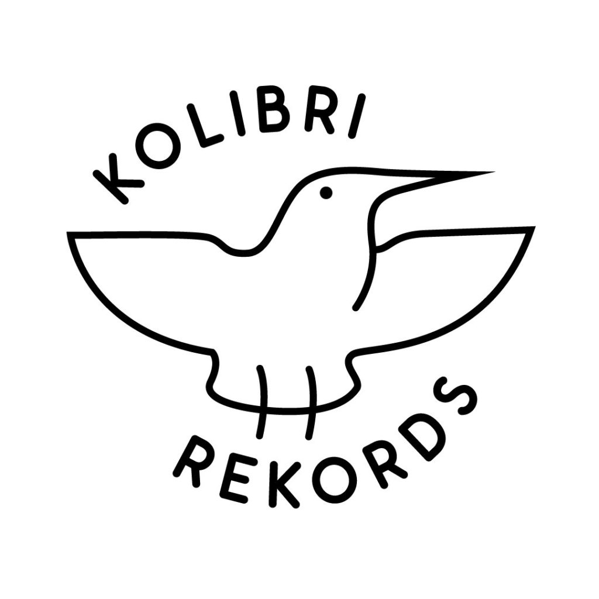

Wawancara Dengan Label Rekaman Kolibri

Kolibri Rekords merupakan label rekaman dari Jakarta yang dibentuk dan dikelola oleh Daffa Andika dan Ratta Bill Abaggi. Label rekaman ini mendistribusikan musik di dalam dan di luar jaringan. Dalam praktek produksi dan distribusi musik, Kolibri Rekords menerapkan ketentuan lisensi Creative Commons (CC), yakni lisensi CC BY-NC-SA (Atribusi-NonKomersial-BerbagiSerupa). Ketentuan tersebut diaplikasikan oleh Kolibri pada laman Bandcamp mereka, untuk musik-musik yang mereka distribusikan di dalam jaringan. Situs web Bandcamp menyediakan pilihan lisensi CC, agar dapat diaplikasikan oleh pengguna situs pada tiap konten yang mereka unggah.
Kolibri juga menempelkan ketentuan lisensi CC tersebut pada rekaman musik dalam format fisik yang mereka produksi. Dengan melihat praktik berbagi musik, serta konten-konten musik menarik yang diciptakan oleh para roster label rekaman ini, tim CCID memutuskan untuk menerbitkan artikel wawancara dengan Kolibri Rekords. Daffa Andika, salah satu pendiri label rekaman Kolibri, menjadi narasumber kami untuk sesi wawancara ini.
Selamat membaca.
Bagaimana pola konsumsi musik Anda sehari-hari?
Sekitar 3-4 tahun yang lalu, saya termasuk orang yang rajin mengunduh konten musik yang tersebar di laman-laman blog secara ilegal. Saat ini, saya lebih nyaman menggunakan layanan streaming. Spotify merupakan platform mendengarkan musik secara legal yang paling sering saya pakai. Keberadaan Spotify benar-benar mengurangi aktivitas mengunduh musik secara illegal yang dulu kerap saya perbuat. Meskipun, saya beberapa kali masih mengunduh album musik, secara legal tentunya. Album musik yang terakhir kali saya unduh adalah album-album musik dari musisi seperti Bottlesmoker, Frau, dan Paduan Suara Dialita yang diterbitkan oleh Yes No Wave Music dan Ripstore Asia.
Bagaimana label rekaman ini dimulai?
Apakah ada kaitannya dengan Anda sebagai orang yang gemar berbagi musik?
Pada dasarnya saya tidak mampu bermain musik, tapi saya sangat menyukai musik. Menjadi suatu hal yang alami bagi saya, untuk kemudian melakukan banyak hal yang berkaitan dengan musik. Saya pun sempat menulis tentang musik untuk berbagai media, namun lambat laun saya mulai bosan, dan muncul ide di kepala saya bahwa aktivitas di label rekaman musik sepertinya lebih menggairahkan.
Saat itu, saya rasa di lingkungan musik lokal, masih jarang ada label rekaman yang bertingkah laku selayaknya label rekaman. Saya merujuk pada label rekaman Aksara Records. Bagaimana sebuah label rekaman bisa memiliki karakter kuat, yang tercermin dari musik yang dibawakan oleh roster-roster-nya. Label rekaman yang berkarakter, tidak sekedar menjadi distributor musik saja. Kemudian, saya berpikir sepertinya akan menyenangkan jika ada label rekaman seperti Aksara, namun diperuntukan bagi generasi saya. Yang saya raskan, ketika saya menghadiri suatu acara musik di Jakarta, yang datang itu kebanyakan orang-orang dari generasi sebelumnya, senior. Situasi tersebut membuat saya merasa terasingkan, saat itu. Maka dari itu, saya pikir akan menarik jika kita mencoba untuk membuat gelombang baru, yang diisi oleh anak-anak dari generasi baru (muda.Red), dan dengan konten musik yang mewakili generasi termuda. Sehingga ketika saya datang ke suatu acara musik, yang hadir adalah orang-orang yang paling tidak sepantaran dengan saya. Karena jika hal itu terjadi, saya rasa suasana intimidatif dalam gigs akan berkurang, semuanya akan menjadi lebih terbuka dan lebih cair.
Menurut saya, hal itu dapat saya wujudkan dengan menjalankan sebuah label rekaman. Saya sudah memiliki bayangan nantinya Kolibri Rekords akan menyediakan musik-musik yang seperti apa, tentu saja musik-musik yang mewakili generasi termuda. Dengan menyediakan konten musik yang seperti itu, saya dapat mengumpulkan orang-orang dari generasi termuda, di mana orang-orang dari generasi tersebut akan merasa lebih memiliki tempat, daripada dengan menyediakan musik generasi lampau yang menimbulkan jarak.
Apa kriteria suatu kelompok musik untuk dapat diterbitkan albumnya oleh Kolibri Rekords?
Bagaimana anda merekrut tiap roster Kolibri Rekords?
Saya dan Ratta memiliki selera dan visi musik yang hampir sama. Menurut kami, dewasa ini banyak sekali kelompok musik baru bermunculan. Namun, kami rasa, mereka tidak membuat sesuatu yang baru. Hampir keseluruhan dari mereka hanya mengulang kesuksesan kelompok musik-kelompok musik yang ada sebelumnya. Selain itu, terdapat situasi tertentu ketika suatu jenis musik sedang naik daun, hampir semua orang kemudian berlomba-lomba membuat band yang memainkan jenis musik tersebut. Ya, meskipun tidak harus sepenuhnya baru, tetapi paling kita dapat memberikan pendengar pilihan-pilihan. Saya rasa, kalau ada satu pihak yang dapat memberikan pilihan yang lebih segar, kenapa tidak? Dan, sudah seharusnya suatu label rekaman memiliki karakter khas, sehingga pendengar dapat mengetahui ketika mereka mencari suatu band dengan jenis musik tertentu, mereka harus mencarinya di mana.
Sejauh ini ada 5 kelompok musik yang karyanya diterbitkan oleh Kolibri Rekords. Yang pertama adalah Bedchamber. Bedchamber merupakan band sahabat saya, Ratta. Saat itu Bedchamber baru terbentuk, dan memiliki materi siap terbit. Tetapi, mereka tidak tahu akan menerbitkan materi tersebut melalui apa. Kemudian, kami memutuskan untuk membuat Kolibri Rekords sebagai wadah untuk menerbitkan musik Bedchamber. Sedangkan Gizpel adalah band milik teman satu kampus saya. Kebetulan, saat itu Kolibri baru mulai berjalan, dan ketika saya mendengarkan musik dari Gizpel saya merasa bahwa mereka cocok untuk menjadi bagian dari Kolibri, hingga akhirnya kami membantu penerbitan album musik mereka. Lalu ada Atsea yang merupakan kelompok musik milik teman daring saya. Saya mengenalnya melalui facebook, dan hanya bertemu di facebook saja. Ketika saya teringat bahwa ia juga memiliki kelompok musik, yang saya rasa musiknya juga layak untuk diterbitkan oleh Kolibri.
Ketika saya hubungi, ternyata ia sudah tidak aktif bermusik. Tetapi, saya tetap menyampaikan keinginan saya untuk menerbitkan karya Atsea melalui Kolibri Rekords. Akhirnya ia setuju untuk mengaktifkan kembali Atsea, dan menerbitkan album musiknya dengan bantuan label rekaman kami. Lalu, ada Kaveh Kanes. Deva dari Polkawars mengenalkan saya pada vokalis Kaveh Kanes, Asad, di suatu acara. Menurut saya, jika kita merujuk pada kelompok musik-kelompok musik yang karyanya pernah diterbitkan oleh Kolibri, musik yang dibuat oleh Kaveh Kanes sangat sesuai untuk diterbitkan melalui Kolibri. Kebetulan, saat itu Kaveh Kanes juga sudah memiliki materi siap terbit, dan sedang mencari label rekaman, jadi kami langsung menawarkan bantuan untuk menerbitkan album musik Kaveh kanes. Low Pink benar-benar murni saya temukan di dalam jaringan. Walaupun secara musikal, saya rasa Low Pink adalah band yang paling tidak memenuhi kritetia Kolibri. Namun, pelan-pelan mereka akhirnya mampu melebur dengan kriteria musik Kolibri, karena mereka sering bergaul bersama kami.
Untuk urusan manajerial Kolibri sangat santai. Kami tidak tahu ini baik atau buruk, tapi kami belum pernah membuat kontrak tertulis untuk masing-masing roster kami. Tapi mungkin suatu saat akan kami terapkan, supaya lebih jelas hitam di atas putihnya.
Apakah terdapat komunikasi terkait penggunaan lisensi terbuka dengan band-band yang karyanya diterbitkan oleh Kolibri Rekords?
Kami selalu menyampaikan terkait penggunaan lisensi CC pada roster-roster kami. Saya pribadi sangat mendukung aktivitas persebaran kebudayaan, terutama persebaran musik. Label rekaman kami memiliki visi untuk menciptakan gelombang baru, artinya konten-konten musik ini harus dapat disebarkan seluas mungkin. Lisensi CC merupakan alat yang tepat dalam aktivitas persebaran tersebut. Sejauh ini, kelompok musik yang karyanya diterbitkan oleh Kolibri memiliki visi yang sama dengan kami terkait penerapan ketentuan lisensi. Mereka tidak mempermaslahkan penyebarluasan dan penggunaan karya musik mereka. Mereka merasa bahwa mereka itu kelompok musik baru, yang ingin karyanya dapat tersebar dan terdengar seluas-luasnya.
Apa yang mendasari Anda untuk memanfaatkan platform Bandcamp?
Apakah alasan praktis atau karena Anda tahu bahwa di Bandcamp terdapat platform lisensi CC?
Sebelum saya membentuk Kolibri Rekords, saya sudah menjadi penikmat konten musik yang ada di Bandcamp. Jadi, ketika saya dan Ratta memutuskan untuk mendirikan label rekaman, membuat akun Bandcamp untuk label kami merupakan hal yang pertama kali muncul di pikiran. Karena, pada waktu itu konsep menyediakan album penuh di iTunes dan Spotify juga belum umum. Selain itu, Bandcamp merupakan situs yang amat fleksibel untuk didesain ulang. Kita juga dapat menyertakan lirik pada tiap album musik yang diunggah, dan kita dapat pula memberikan pilihan kepada pendengar untuk mengunduh secara gratis maupun berbayar. Saya baru tahu jika terdapat pilihan lisensi CC di Bandcamp saat saya membuat akun untuk Kolibri Rekords, dan tentu saja hal tersebut membuat saya jadi lebih menyukai Bandcamp.
Kenapa lisensi terbuka, dan kenapa Creative Commons?
Saya mulai mengenal lisensi CC dengan mengakses situs Yes No Wave Netlabel. Seingat saya, waktu Yes No Wave baru saja berdiri, dan mereka sempat gencar memperkenalkan konsep lisensi CC di dalam jaringan. Waktu itu saya tidak mengerti, lisensi CC ini memiliki peran apa untuk Netlabel? Maka dari itu saya mulai mempelajari, dan memahaminya, hingga kemudian saya yakin bahwa alat ini juga merupakan alat yang baik untuk label rekaman saya. Menurut saya, konsep hak cipta penuh (lisensi tertutup) merupakan sesuatu yang amat membatasi. Sikap politis saya yang masih bersinggungan dengan paham sosialis, membuat saya merasa bahwa hal seperti musik juga merupakan sesuatu yang seharusnya bisa dinikmati oleh banyak orang.
Kenapa lisensi CC BY-NC-SA?
Bagaimana Anda mengelola Kolibri Rekords, yang karya-karyanya menggunakan konsep lisensi terbuka (bebas untuk digunakan kembali), sambil tetap menerima uang?

Setelah saya membaca seluruh ketentuan lisensi-lisensi CC, saya merasa paling cocok dengan ketentuan BY-NC-SA. Karena, menurut saya, ketika seseorang mendapatkan suatu konten musik secara gratis, akan menjadi tidak etis jika mereka menjualnya kembali. Saya harap para pendengar juga bisa memahami maksud kami dalam penggunaan ketentuan ini. Bahwa, ketika seorang pendengar membeli album musik, sebenarnya yang mereka itu format fisiknya saja. Konten musik yang terkandung dalam format fisik album musik tersebut, bagaimana penggunaannya kami serahkan kembali kepada pembeli. Mereka boleh menggandakan, dan menyebarluaskan, asal tidak digunakan untuk mendapatkan uang. Jika ada pihak yang mengunggah konten musik Kolibri di suatu situs agar dapat diunduh secara gratis, kami tidak akan keberatan, yang penting bukan untuk kepentingan komersial. Kami tidak akan merasa kehilangan satu apapun, toh kami juga menyediakan kontem musik tiap album untuk dapat didengarkan secara penuh di Bandcamp, dan ketika ada pihak yang menginginkan format fisiknya, mereka tinggal membayar.
Hal ini kami lakukan, karena kami rasa hingga saat ini album dalam format fisik, masih relevan. Dulu saya sempat berpikir untuk membuat Kolibri sebagai Internet Label saja. Namun, yang saya khawatirkan adalah nantinya Kolibri akan menjadi ‘label butik’ saja. Hal itu dapat mengambat impian kami untuk membangun keluarga, serta suatu pergerakan. Namun, keinginan saya untuk membangun Internet Label belum hilang, meskipun bukan merupakan bagian dari Kolibri.
Apakah Anda pernah menemukan 1 atau 2 pihak melakukan pelanggaran atas ketentuan yang Anda terapkan terhadap karya-karya yang dirilis oleh Kolibri Rekords?
Seperti yang telah kita ketahui terdapat beberapa pengguna Youtube yang mengunggah konten-konten musik lewat kanal pribadi mereka. Terdapat satu kanal Youtube yang memang aktif mengunggah konten musik dari band-band independen yang ada di Indonesia. Sebelum saya menjadi pemilik label rekaman pun, saya sudah mengetahui keberadaan kanal ini, dan saya menyukainya! Saya senang mengetahui bahwa lagu-lagu dari band yang saya suka, tersedia juga di Youtube. Namun, pandangan saya kemudian berubah, ketika kini saya berperan sebagai pemilik label rekaman. Kanal ini rupanya juga mengunggah konten musik yang diterbitkan oleh Kolibri Rekords. Kami sama sekali tidak mempermasalahkan hal tersebut, sebelum kami ketahui bahwa ternyata video-video tersebut dimonetisasi. Ada iklan, dan ada pemasukan, untuk setiap video yang diunggah, dan ditonton. Saya akhirnya mengontak pihak pengunggah, dan bertanya kenapa ia memonetisasi video-video tersebut. Pengunggah ini memiliki prinsip bahwa uang yang didapatnya dari hasil memonetisasi video-video tersebut, akan digunakan untuk membeli format fisik album musik lokal, yang kemudian konten musiknya juga akan diunggah di kanalnya, dengan tujuan untuk disebarkan kembali. Saya tidak dapat menerima alasan tersebut. Karena, bagi saya, NonKomersial berarti sama sekali tidak boleh ada penggunaan secara komersial dalam bentuk apapun, dan dengan alasan apapun, atas konten musik dari Kolibri Rekords. Kami berharap agar video-video tersebut sudah tidak dimonetisasi.
Apakah di masa depan Kolibri akan terus menerapkan ketentuan lisensi CC BY-SA pada album musik yangg diterbitkannya?
Saya rasa, itu semua bergantung pada kondisi pasar musik yang kami hadapi. Untuk saat ini, menurut saya konsep lisensi CC masih layak untuk diterapkan di Kolibri. Tapi, saya juga tidak menutup kemungkinan bahwa suatu saat Kolibri akan menerapkan konsep lisensi “All Rights Reserved”. Misalnya, jika Kolibri menjadi sesuatu yang lebih besar, seperti Sub Pop, dan konsep CC sudah tidak relevan, maka tidak akan kami paksakan. Saya pasti akan lebih memilih menggunakan konsep hak cipta penuh, karena saya rasa sesuatu yang besar, potensi ancamannya akan semakin nyata. Tetapi penggunaan lisensi CC akan saya coba untuk tetap pertahankan dengan membuat anak label, label yang lebih kecil. Penggunaan lisensi CC yang kami terapkan ini bukanlah hal yang ‘sa klek’, kami menggunakannya karena kami rasa hal itu cocok untuk kami saat ini. Untuk bentuk-bentuk penggunaan seperti ‘penggunaan wajar’ oleh pengguna, kami tidak akan mempermasalahkan, tapi itu juga tergantung pada roster kami. Jika roster kami tidak menghendaki penggunaan tersebut, tentu kami sebagai label rekaman akan menengahi.
Apakah Anda pernah menemukan karya remix dari karya band-band yang Anda rilis di Kolibri Rekords?
Bagaimana pendapat Anda tentang penggunaan kembali suatu karya untuk membuat karya baru?
Kalau karya remix, sejauh ini belum ada. Yang kami temukan, ada satu-dua pihak yang membawakan kembali lagu dari roster-roster Kolibri. Lalu, hal menyenangkan lain yang kami temukan adalah ternyata ada orang yang menggunakan lagu roster Kolibri untuk video liburan mereka. Walaupun, kadang-kadang sumber atau nama pencipta lagu tidak disebutkan. Meskipun kami tidak terlalu mempermasalahkan hal tersebut, tentu saja lebih baik jika mereka menyebutkan sumber dan nama karya musik yang digunakan, karena kami juga menerapkan ketentuan Atribusi. Kami rasa, ketika ada pihak yang menanyakan dari mana lagu tersebut didapat, dan siapa pemilik lagu tersebut, mereka pasti akan menjawabnya dengan jujur.
Menurut Anda, apakah ketentuan-ketentuan yang dibuat oleh lisensi CC mudah untuk diterapkan?
Lambat laun saya mulai memahami esensi lisensi CC dengan menerapkan ketentuan lisensi CC pada album musik yang kami terbutkan. Saya menjadi terbiasa melihat ketentuan itu tertera pada CD yang kami terbitkan, dan saya sekarang malah mempertanyakan esensi dari konsep lisensi “All Rights Reserved”. Apalagi konsep tersebut kerap diterapkan juga oleh kelompok musik, yang bukan ‘kelompok musik besar’, di format fisik album musik mereka. Hal ini mempertanyakan alasan kekhawatiran mereka. Kenapa mengkhawatirkan penggunaan atas karya mereka yang bukan ‘kelompok musik besar’? Kenapa saya jadi melanggar hukum ketika saya menyukai musik mereka dan hanya ingin sekedar membagikan musik mereka ke rekan-rekan saya? Saya rasa ada pembentukan mental rendah hati, sebagai kelompok musik baru, dan tidak besar dengan menggunakan lisensi CC . Saya rasa, sebelum kita menjadi besar, dan terlibat dengan banyak kepentingan serta sistem yang lebih rumit, lebih baik selagi kita bisa menerapkan ketentuan macam ini, lebih baik dicoba saja.
Bagaimana aktivitas berbagi musik atau keterbukaan konten berjalan di skena musik tempat Anda beraktivitas sekarang ini?
Saya salut dengan Efek Rumah Kaca yang membebaskan publik untuk mengakses seluruh album mereka, menerapkan lisensi terbuka, dan membuat satu album gubah ulang yang juga menggunakan lisensi terbuka. Praktek-prakterk semacam ini belum meluas, khususnya di Jakarta. Tapi, saya senang melihat bagaimana Nanaba Records, atau Sorge Records, yang juga menggunakan lisensi CC. Saya rasa, paham ini menyebar secara tidak langsung, tanpa ada pihak yang harus menjelaskan konsep CC secara langsung kepada pihak-pihak yang terlibat di dalam skena musik lokal.
Apa proyek ke depan dari Kolibri Rekords?
Saat ini kami sedang merancang jadwal tur untuk Low Pink. Mungkin, setelah ini akan ada roster baru lagi di Kolibri. Lalu, Bedchamber dan Atsea sedang sibuk mempersiapkan album penuh mereka. Kemudian, yang masih menjadi cita-cita saya dan Ratta adalah membuat Kolibri Festival. Kami ingin mengundang band-band pilihan kami untuk tampil, mungkin juga ada band dari luar negeri, dan tanpa sponsor. Mudah-mudahan bisa segera terwujud. Dan, sebisa mungkin kami ingin melakukan banyak tur.
Ikuti Kolibri Rekords di Twitter
Sukai Kolibri Rekords di Facebook